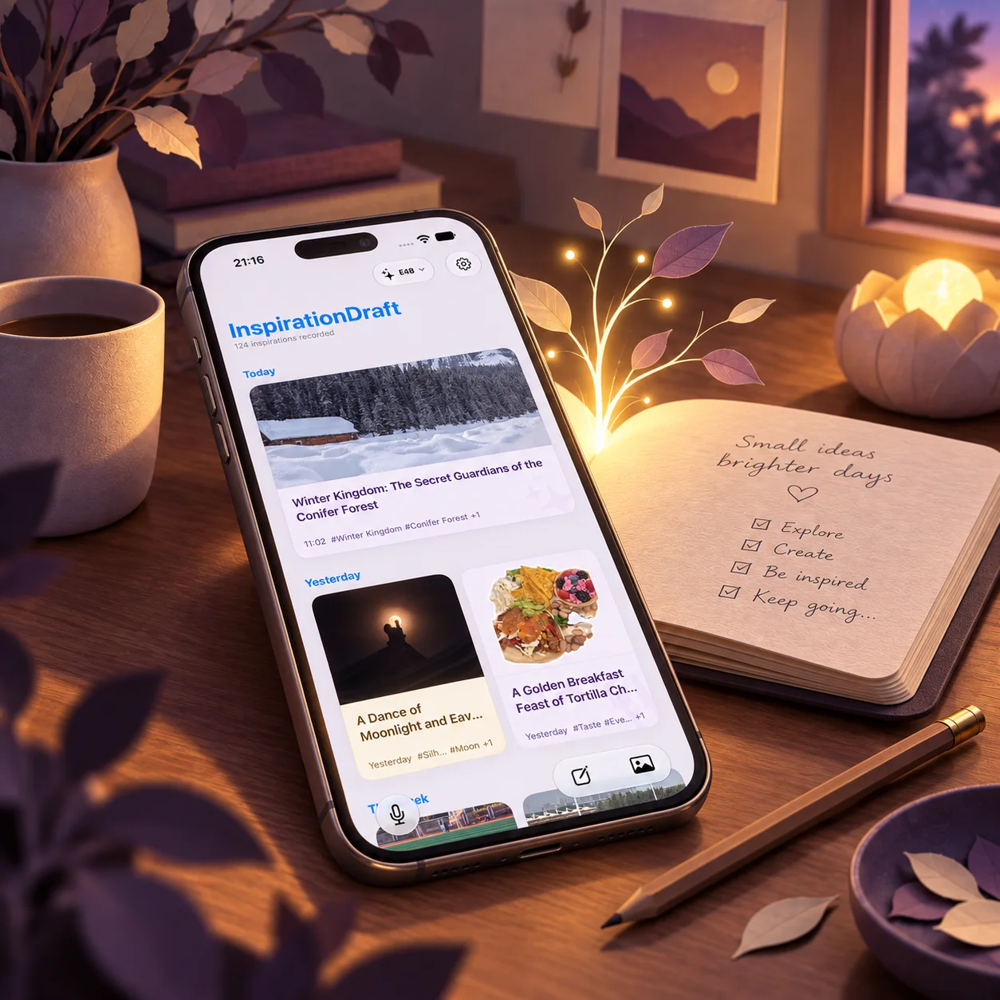
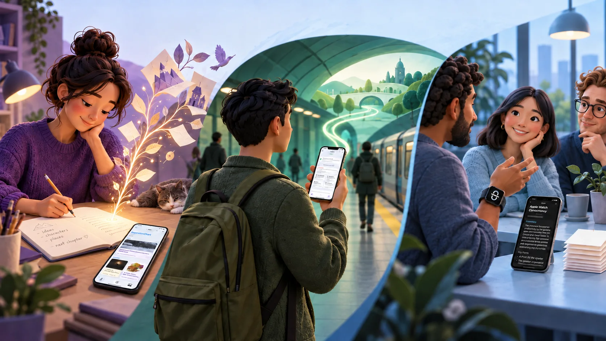
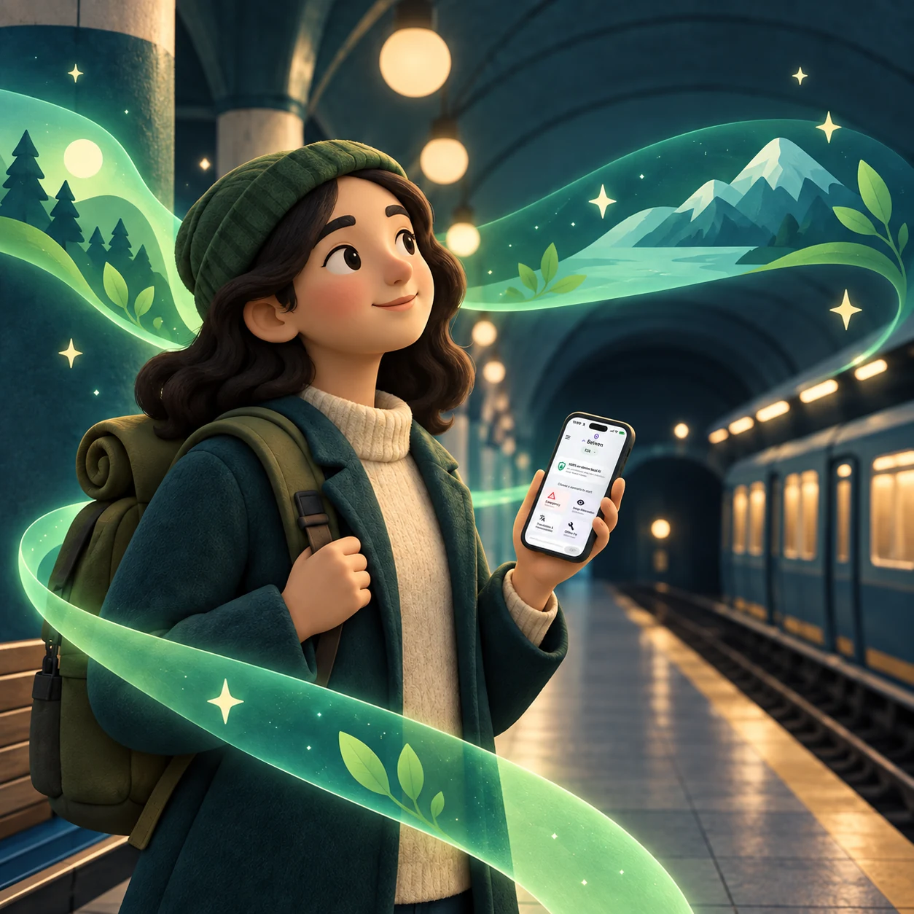
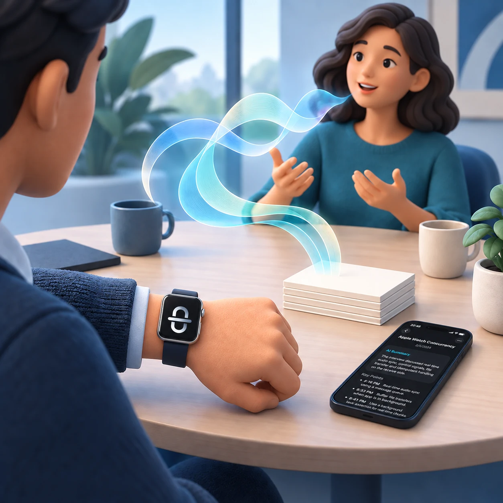
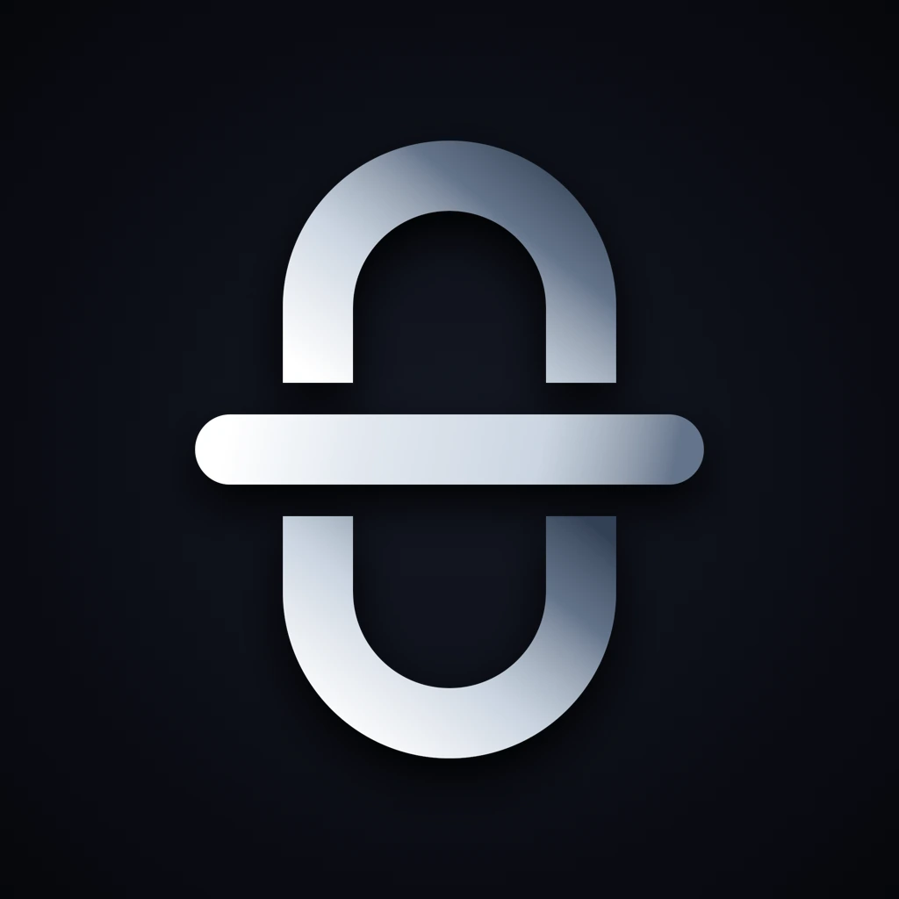

把未完成的想法先留下
灵感树洞InspirationDraft
随手留下灵感，准备好时再整理、继续发展。
三款 App，各自在关键时刻派上用场
从灵感记录，到离线问答，再到会议回顾。根据当下需要，选择合适的工具。

灵感树洞 + 备问
App Store 套装已提交，正在等待审核。获批后，实际售价与可售地区以商店页面显示为准。

把未完成的想法先留下
随手留下灵感，准备好时再整理、继续发展。

网络不可靠时，也能继续问
本地模型准备好后，可在离线时继续问答、翻译和查看图片参考。
离线使用需要先下载并准备好本地模型。
在 App Store 查看

把会议留待之后回顾
从 Apple Watch 或 iPhone 记录会议，之后回听、查看转录和整理会后内容。
三款独立 App，各自解决不同场景。选择适合此刻的一款；灵感树洞与备问的组合优惠将在套装审核通过后提供。